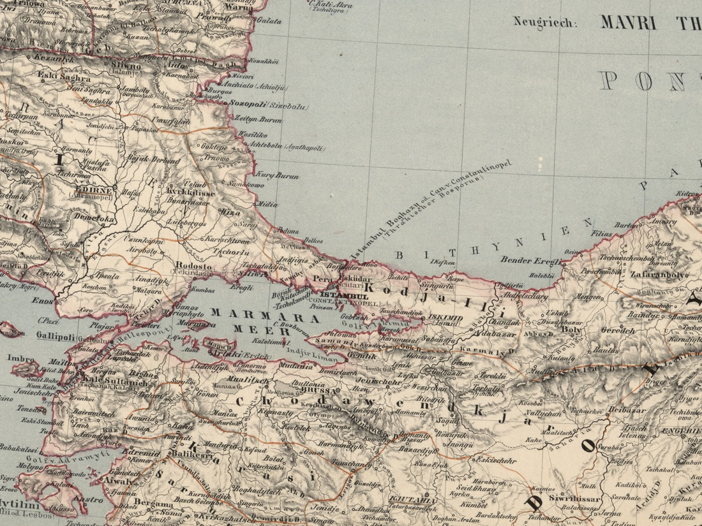

Steam, Soil, and Specialization: The Impact of Railways on Ottoman Agricultural Integration, 1881–1913
Ottoman railways, routed for military rather than commercial ends, still reshaped agriculture: export crops expanded along the western trade corridor, while cereals grew with internal connectivity.
This paper investigates whether the Ottoman Empire’s strategically motivated railway network—financed by foreign capital and routed for military objectives rather than commercial demand—transformed agricultural production. Combining crop–county-level data from the 1909 and 1913 agricultural censuses with a novel GIS-based measure of market access changes during the main expansion period (1881–1909), I estimate the elasticity of output with respect to market access using a Poisson Pseudo-Maximum Likelihood estimator. A 1 percent increase in market access raised agricultural production by approximately 0.12 percent; instrumental variable estimates yield a modestly larger elasticity of 0.17, consistent with strategic routing through less productive regions. Decomposing market access by destination type reveals a dual structure: export-oriented crops—cotton, tobacco, and opium—expanded where railways improved access to the empire’s western trade corridor, while cereals grew through enhanced internal connectivity and contracted where the empire’s European-side connectivity improved. These patterns are consistent with railways serving as a key channel linking the empire’s agricultural periphery to westward trade routes, simultaneously facilitating export specialization and domestic market integration.